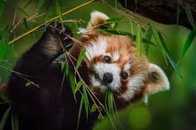

The Red Panda 🦊
Red pandas are small, tree-dwelling mammals found in the Himalayas and China. Despite their name, they are not closely related to giant pandas. Known for their ringed tails, playful nature, and tiny paws, red pandas spend much of their time climbing trees and eating bamboo.